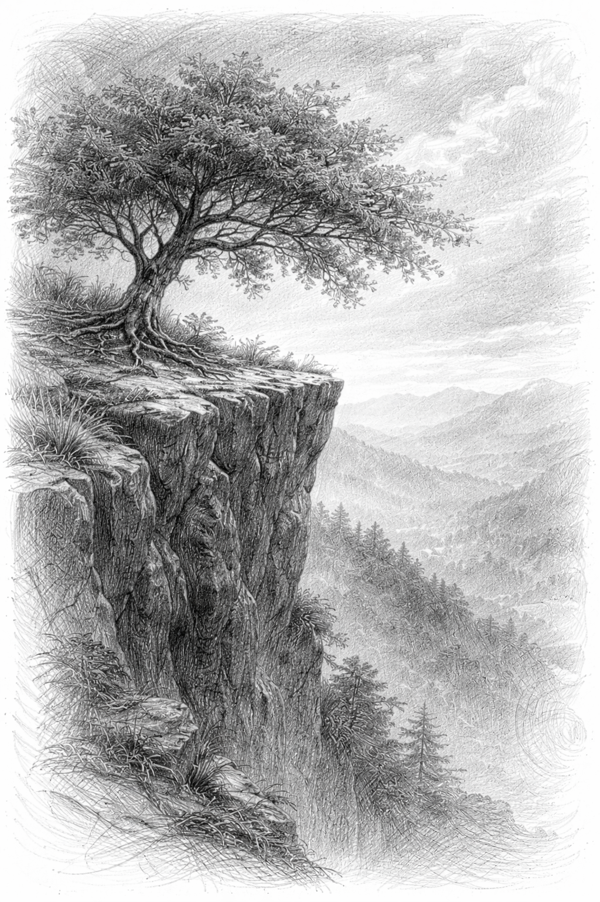

Jika waktu hanyalah sebuah rekaman yang bisa kuputar balik, apakah garis takdirmu akan tetap berhenti tepat di hadapanku? Ataukah kita akan memilih jalan berbeda agar tak perlu saling mengenal? Dulu, aku begitu angkuh saat merangkai kata. Kukatakan padamu bahwa patah hati hanyalah konsekuensi, sementara jatuh cinta adalah bonus yang sewaktu-waktu bisa ditarik kembali. Namun lihatlah aku sekarang, aku justru berakhir di dasar jurang perasaan yang paling dalam, terperangkap oleh teori-teori yang kubuat sendiri.
Bagaimana caraku melupakan, jika setiap sudut kepalaku adalah ruang kelas tempatmu mengajariku banyak hal? Kamu mengajariku cara melihat dunia, tapi lupa mengajariku cara melepasmu. Dan tentang janji-janji yang menguap itu...
Benarkah kamu lupa?